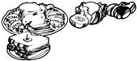

TOP LEFT: Slicing a beef kidney. TOP RIGHT: A partially peeled beef tongue. BOTTOM LEFT: Braised kidneys with mushrooms and bacon, sweetbread chowder, and sweetbreads in sherry sauce. BOTTOM RIGHT: Cooked, pressed, and sliced beef tongue.